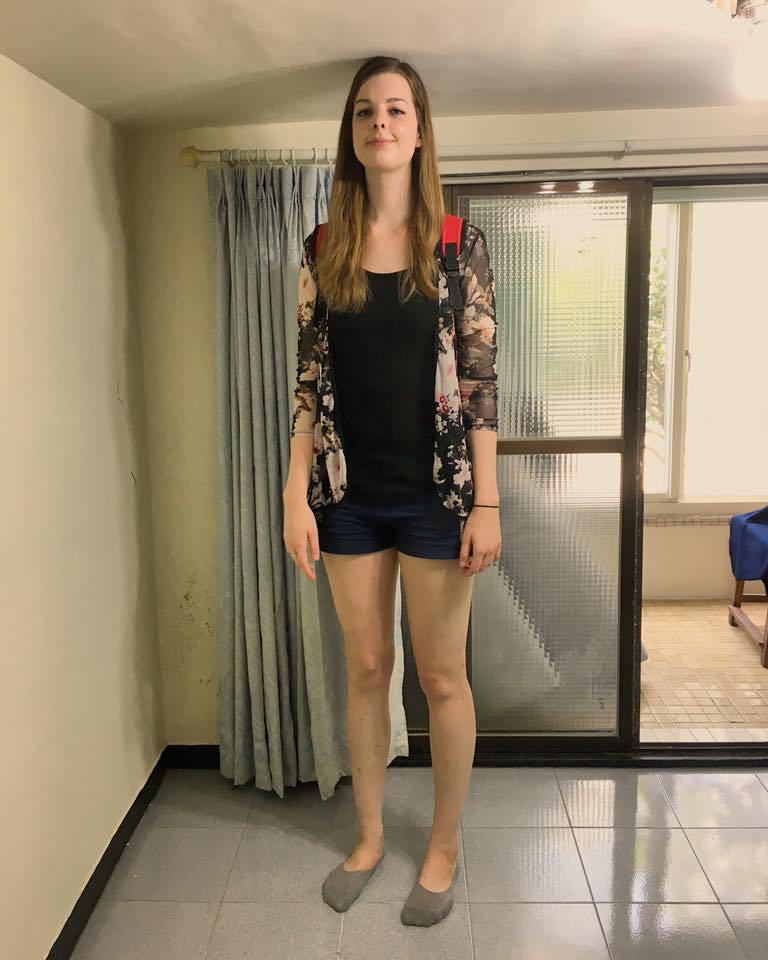
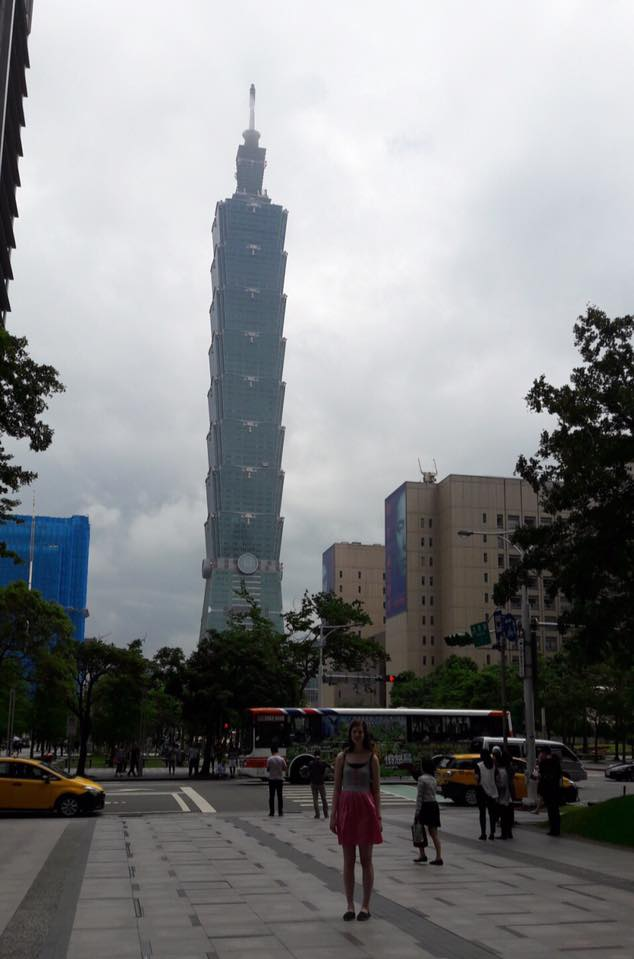

Previously I've written about life as a 6'5 woman. I spent last summer in Taiwan, and before I went I got a lot of questions about what it would be like being so tall there, and I really had no idea. I tried to google for some other blog posts of tall women who'd been to Taiwan, but (not surprisingly) the Venn diagram of 6'5 women and women who have been to Taiwan doesn't have a very big overlap. So I figured I'd put something out there for the next time someone has this issue! (Peppered with photos of me being very tall in Taiwan)
Here in the states I get a lot of comments from strangers. I expected this in Taiwan too. My first week there, I only heard a few comments about my height in Chinese, which was surprising. However, the longer I was there, the more comments I heard, because my listening comprehension had increased so much! Turns out, lots of people comment on it.
Most white people in Taiwan are English teachers or tourists, not Chinese students, so Taiwansese people generally assumed I couldn't understand what they were saying about me. Pretty often, people next to me would be chatting in Chinese about the giant white girl they were standing next to. Usually it was pretty flattering, in which case I'd just act like I wasn't listening. But if they started guessing my height, I would tell then in Chinese that I was 195 cm, and they'd look very surprised at me like they just heard a dog talk or something.
My height was almost a disability trying to walk through this cave.
Here in the states, people ask me if I play volleyball or basketball (spoiler alert: I don't), but in Taiwan people would assume I was a model. When we went to the top of Taipei 101, my Japanese roommaate and I met a random Chinese guy while waiting in line. I wasn't used to the model comments at this point, and I remember being so surprised when he said, "So, do you have modelling jobs lined up here?" because he just assumed I was a model. I was always surprised at this, because, not to be self-depreciating (I like how I look and I am happy with my weight), I don't consider myself to look like a model. In Taiwan however, they saw my pale skin and extreme height and just assumed.
My host family's beach house had a room with 6'5 ceilings apparently.
People did ask to take pictures with me, and I happily obliged, peace sign and all. Sometimes people would take pictures of me without asking, and that really irked me. If they came up to me and asked, I always said yes. When I went to Hong Kong many of the other tourists there would do this. I got the most comments per day in Hong Kong. Hong Kong has many Chinese tourists who aren't used to seeing westerners, much less a giant white girl. At the top of Victoria Peak, a Chinese lady asked for a picture with me and I agreed. Then literally a crowd of 20 people came up to take turns taking pictures with me. I felt like a celebrity, and little did they know, I could hear all their comments about my height and pale skin. One day in Hong Kong, I was in a shop while two ladies were chatting about me in Chinese as I was right there. They were talking about my height, and I didn't mind, but then one lady said in Chinese, "Too tall or too short, both are not good." I thought it was rude to call me "too tall" so then I told them how tall I was in Chinese all friendly and smiley, but that lady wouldn't look at me becuase she knew I heard what she said.
Pretty sure Taipei 101 was the only thing taller than me in Taipei.
Half the time someone comments on my height in the states, it feels rude. People will loudly say in a crowd, "Wow! How tall are you!" or "Wow look how tall she is!". Taiwanese people were much more polite and usually wouldn't directly ask me about it unless they knew me. If they did ask, they were shy and polite. School-age children/teens would laugh when they saw me, or make comments in Chinese like "Wow, too tall!", but I just chalk it up to them being kids. I remember in August when I arrived at the Chicago airport, my first time in the states in 3 months, I noticed that not everyone was looking at me. Without realizing it, I had gotten used to everyone in Taiwan looking at me. I definitely have thicker skin about people staring and their comments now.
Doorways in most places weren't a concern, but in some older buildings the doorways were only up to my shoulders! I have a lot of pictures with signs that say to watch your head. Chairs/beds/etc were all fine because I'm used to things not fitting me anyways. I didn't buy any clothes there, except at H&M.
Most days in Taipei I didn't get too many comments. However, when I would leave Taipei and go to smaller towns or the South, they weren't as used to seeing foreigners and I would get lots of comments. I didn't mind though, becuase in general, the attitude in Taiwan was more like, "Wow, amazing!" rather in the states where I feel like a lot people think, "Wow, weird!" Being tall in Taiwan made me love my height even more.
Once in a metro stop, my Japanese roommate saw another white guy as tall as I am, and she got really excited and asked if I knew him, like all tall people worldwide were part of the same club or something. (Actually, I shouldn't talk, my parents met through a social group called Tall Texans!)
Questions? Comments? Don't hesitate to contact me!